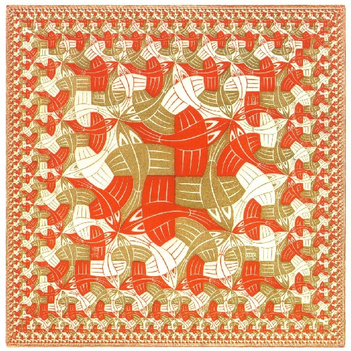
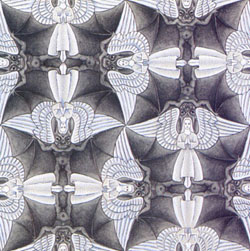
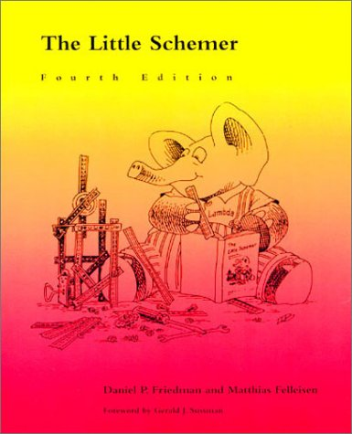
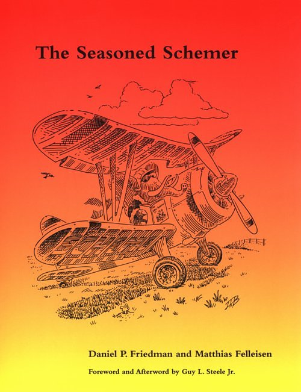
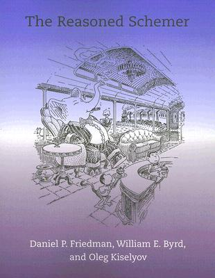
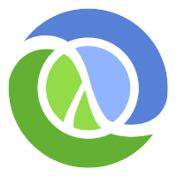

class: center,middle  ### @thattommyhall Theatre fan, occasional mountaineer, part time runner, thoroughly nice chap, available in fine bookstores everywhere. [thattommyhall.com](http://thattommyhall.com) --- class: center [futurelearn.com](http://futurelearn.com) --- class: center,middle # javascript == scheme --- class: center,middle # JS: The Best Parts ## Closures ## Prototypes ## obj = {p:1, q:2, r:3} ## arr = ["hi, "there"] --- class: center,middle # JavaScript == Scheme ## First Class Functions ## Closures --- class: center,middle JavaScript !== scheme ===================== ## Prototypes? ## Object Literals ## Arrays (have cons cells in scheme though) ## No TCO --- class: middle,center On JavaScript ============= <blockquote> The part that is good is not original, and the part that is original is not good </blockquote> <blockquote>I was recruited to Netscape with the promise of “doing Scheme” in the browser... previously, at SGI, Nick Thompson had turned me on to SICP <cite>Brendan Eich</cite></blockquote> --- class: center,middle With good functions, you dont need much else =========================================== --- You don't need: Classes ======= ```javascript var mammal = function (spec) { var that = {}; that.get_name = function ( ) { return spec.name; }; that.says = function ( ) { return spec.saying || ''; }; return that; }; var myMammal = mammal({name: 'Herb'}); ``` --- You don't need: Inheritance =========== ```javascript var cat = function (spec) { spec.saying = spec.saying || 'meow'; var that = mammal(spec); that.purr = function (n) { var i, s = ''; for (i = 0; i < n; i += 1) { if (s) { s += '-'; } s += 'r'; } return s; }; that.get_name = function ( ) { return that.says( ) + ' ' + spec.name + ' ' + that.says( ); return that; }; var myCat = cat({name: 'Henrietta'}); ``` --- You don't need: Variables ========= ```javascript var factorial1 = function (n) { var result = 1; while (n > 1) { result *= n; n -= 1; } return result; }; var factorial2 = function(n) { return (function (result) { while (n > 1) { result *= n; n -= 1; } return result; }(1)); } ``` --- You don't need: Numbers ======= ```javascript function identity(x) { return x; } function zero(f) { return identity; } function succ(n) { return function(f) { return function(x) { return f(n(f)(x)); } } } ``` --- One,Two,Three === ```javascript // one = succ(zero) function(f) { return function(x) { return f(x); } } // two = succ(one) function(f) { return function(x) { return f(f(x)); } } ``` --- class: center,middle # Onwards to rationals, complex, negatives, arithmetic --- class: center,middle # You can implement objects and arrays too... --- # You don't need: Recursion ```javascript function y(le) { return (function (f) { return f(f); }(function (g) { return le(function (x) { return g(g)(x); }); }) ); } var factorial3 = y(function (fac) { return function (n) { return n <= 2 ? n : n * fac(n -1); }; }); factorial3(5) // => 120! ``` --- class: center,middle Closures ======== --- The Canonical Closure ===================== ```javascript var counter = function (value) { var x=value; return function (y) { return x++;}; }; counter1 = counter(1) counter2 = counter(5) counter1() // => 1 counter1() // => 2 counter2() // => 5 ``` --- class: center,middle # First Class Functions ## They can be passed as args to other functions ## They can be returned by other functions ## They can be assigned to variables or stored in data structures --- class: center,middle # Higher order functions ## Pass and/or return other functions --- class: center,middle Creating A Language Of Pictures =============================== --- class: center,middle How to describe Escher? =======================  --- class: center,middle Combining Pictures ================== <canvas id="combining_pictures" width="400" height="400"></canvas> --- #The Code ```javascript // combining_pictures.js (function() { var canvas_frame = document.getElementById('combining_pictures'); var context = canvas_frame.getContext('2d'); var george = segment_painter(george_path,context); display = square_of_four(flip_horiz,identity, rot,flip_vert); beside(right_split(george,3), display(george))(frame1); })(); ``` --- Some Transformations ==================== ```javascript function identity(p) { return p; } function below(p1,p2){ return rot270(beside(rot(p1), rot(p2))); } function rot180(p) { return rot(rot(p)); } function rot270(p) { return rot(rot180(p)); } function below(p1,p2){ return rot270(beside(rot(p1), rot(p2))); } ``` --- class: middle ```javascript function square_of_four(tl,tr,bl,br) { return function(p){ var top = beside(tl(p), tr(p)); var bottom = beside(bl(p), br(p)); return below(bottom,top); }; } function right_split(p,n){ if (n === 0) { return p; } var smaller = right_split(p,n-1); return beside(p,below(smaller,smaller)); } ``` --- class: middle ```javascript function corner_split(p,n) { if (n === 0) { return p; }; var up = up_split(p, n-1); var right = right_split(p, n-1); var tl = beside(up,up); var br = below(right,right); var corner = corner_split(p,n-1); return beside(below(p,tl), below(br,corner)); } function up_split(p,n) { if (n === 0) { return p; } var smaller = right_split(p,n-1); return below(p,beside(smaller,smaller)); } ``` --- class: middle # Vocab - Vectors ```javascript function make_vec(x,y) { return { x: x, y: y }; } function make_seg(v1,v2) { return { start: v1, end: v2 }; } function add_vec(v1,v2) { return make_vec(v1.x + v2.x, v1.y + v2.y); } function sub_vec(v1,v2) { return make_vec(v1.x - v2.x, v1.y - v2.y); } function scale_vec(v,s) { return make_vec(v.x * s, v.y * s); } ``` --- More vocab - paths ================= ```javascript // veclist -> segment_list function path(veclist) { var seglist = []; for (var i=0; i<veclist.length-1; i++) { seglist.push(make_seg(veclist[i], veclist[i+1])); } return seglist; } ``` --- class: middle We still have not drawn anything! ================================= --- Drawing lines ============= ```javascript function draw_line(v1,v2,context) { context.moveTo(v1.x, v1.y); context.lineTo(v2.x, v2.y); context.strokeStyle = "#000"; context.stroke(); } ``` --- class: middle Data is code, Code is data ========================== --- class: middle What is a picture? ================== <blockquote>A picture is a function that takes a "frame" as an argument and draws itself inside it. </blockquote> --- class: middle A picture draws itself? ======================== --- class: middle, center What is a frame? ================  --- class: middle Our first picture ================= ```javascript // segment_list is a list of segments in the unit square. function segment_painter (segment_list,context) { return function(frame) { for (index in segment_list) { draw_line(frame_coord_map(frame)(segment_list[index].start), frame_coord_map(frame)(segment_list[index].end), context); } }; } ``` --- class: middle What is frame_coord_map? ============================== ```javascript function frame_coord_map (frame) { return function(v) { return add_vec(frame.origin, add_vec(scale_vec(frame.e1,v.x), scale_vec(frame.e2,v.y))); }; }; ``` --- Building George =============== ```javascript george_path = path([make_vec(0.42857143, 0.5), make_vec(0.0, 0.5), make_vec(0.0, 0.6), make_vec(0.42857143, 0.6), make_vec(0.42857143, 0.7), make_vec(0.2857143, 0.8), make_vec(0.2857143, 0.9), make_vec(0.42857143, 1), make_vec(0.5714286, 1), make_vec(0.71428573, 0.9), make_vec(0.71428573, 0.8), make_vec(0.5714286, 0.7), make_vec(0.5714286, 0.6), make_vec(0.71428573, 0.6), make_vec(0.71428573, 0.7), make_vec(0.85714287, 0.7), make_vec(0.85714287, 0.5), make_vec(0.5714286, 0.5), make_vec(0.5714286, 0.4), make_vec(0.71428573, 0.0), make_vec(0.5714286, 0.0), make_vec(0.5, 0.2), make_vec(0.42857143, 0.0), make_vec(0.2857143, 0.0), make_vec(0.42857143, 0.4), make_vec(0.42857143, 0.5)]); ``` --- class: middle,center Drawing him =========== <canvas id="drawing_him" width="400" height="400"></canvas> --- class: middle The Code ======== ```javascript (function() { var canvas_frame = document.getElementById('drawing_him'); var context = canvas_frame.getContext('2d'); var george = segment_painter(george_path,context); var frame1 = { origin: make_vec(100,50), e1: make_vec(300,100), e2: make_vec(150,200) }; var frame2 = { origin: make_vec(0,50), e1: make_vec(100,0), e2: make_vec(0,200) }; george(frame2); george(frame1); segment_painter(box,context)(frame1); segment_painter(box,context)(frame2); })(); ``` --- Box === ```javascript var BL = make_vec(0,0); var BR = make_vec(1,0); var TL = make_vec(0,1); var TR = make_vec(1,1); var box = [make_seg(BL,BR), make_seg(BR,TR), make_seg(TR,TL), make_seg(TL,BL)]; ``` --- Making new pictures from old ============================ ```javascript function transform_picture (p, origin, e1, e2) { return function(frame) { var map = frame_coord_map(frame); var new_origin = map(origin); p({origin: new_origin, e1: sub_vec(map(e1),new_origin), e2: sub_vec(map(e2),new_origin) }); }; }; ``` --- class: middle Flips and Rots ============== ```javascript function flip_vert(p) { return transform_picture(p, make_vec(0,1), make_vec(1,1), make_vec(0,0)); }; function flip_horiz(p) { return transform_picture(p, make_vec(1,0), make_vec(0,0), make_vec(1,1)); }; function rot(p) { return transform_picture(p, make_vec(1,0), make_vec(1,1), make_vec(0,0)); }; ``` --- Beside ====== ```javascript function beside(p1,p2){ var split = make_vec(0.5,0); var left = transform_picture(p1, make_vec(0,0), split, make_vec(0,1)); var right = transform_picture(p2, split, make_vec(1,0), make_vec(0.5,1)); return function(frame){ left(frame); right(frame); }; } ``` --- class: middle,center Making Square Limit =================== --- class: middle,center Tile T ====== <canvas id="tile_t" width="400" height="400"></canvas> --- class: middle,center Square Limit ============ <canvas id="square_limit" width="400" height="400"></canvas> --- The Code ======== ```javascript (function() { var canvas_frame = document.getElementById('square_limit'); var context = canvas_frame.getContext('2d'); function square_limit(p,n) { var combine_four = square_of_four(flip_horiz,identity, rot180,flip_vert); return combine_four(corner_split(p,n)); }; var p_painter = segment_painter(p,context); var q_painter = segment_painter(q,context); var r_painter = segment_painter(r,context); var s_painter = segment_painter(s,context); var t = quartet(p_painter,q_painter,r_painter,s_painter); square_limit(t,1)(frame1); })(); ``` --- class: middle,center But Canvas lets you draw images anyway! ======================================= --- A different picture type ======================== ```javascript function image_painter(image,context) { return function(frame){ context.save(); context.translate(frame.origin.x, frame.origin.y); context.transform(frame.e1.x/image.width, frame.e1.y/image.height, frame.e2.x/image.width, frame.e2.y/image.height, 0, 0); context.drawImage(image,0,0); context.restore(); }; }; ``` --- class: center Drawing An Image ================ <canvas id="drawing_an_image" width="400" height="400"></canvas> --- The Code ======== ```javascript (function() { var canvas_frame = document.getElementById('drawing_an_image'); var context = canvas_frame.getContext('2d'); var frame1 = { origin: make_vec(100,50), e1: make_vec(300,100), e2: make_vec(150,200) }; var frame2 = { origin: make_vec(0,50), e1: make_vec(100,0), e2: make_vec(0,200) }; var image = new Image(); image.src = 'man.gif'; image.onload = function() { image_painter(image,context)(frame2); image_painter(image,context)(frame1); }; })(); ``` --- class: center Escher's Angels ===============  --- class: middle,center <canvas id="eschers_angels" width="400" height="400"></canvas> --- Code ==== ```javascript //eschers_angels.js (function() { var canvas_frame = document.getElementById('eschers_angels'); var context = canvas_frame.getContext('2d'); var image = new Image(); image.src = 'angels.jpg'; image.onload = function() { var angels = image_painter(image,context); var two = below(angels,angels); var four = below(two, two); var part = flip_horiz(right_split(four,3)); beside(part,flip_horiz(part))(frame1); }; })(); ``` --- # What next?    --- class: center <img src="SICP.jpg" height="600" /> --- class: center,middle  --- # Me on core.async at GBNC ## http://lanyrd.com/2013/gbnc/scrprt/ --- class: center # London Clojurians --- Links - javascript ================== * http://brendaneich.com/tag/history/ * http://www.amazon.co.uk/JavaScript-Good-Parts-Douglas-Crockford/dp/0596517742 * http://developer.yahoo.com/yui/theater/video.php?v=crockonjs-3 * http://www.slideshare.net/tmont/introduction-to-functional-programming-in-javascript --- Links - Escher ============== * http://www.ecs.soton.ac.uk/~ph/funcgeo.pdf * http://www.ecs.soton.ac.uk/~ph/papers/funcgeo2.pdf * http://mitpress.mit.edu/sicp/full-text/book/book-Z-H-15.html#%_sec_2.2.4 * http://www.frank-buss.de/lisp/functional.html * http://portal.acm.org/citation.cfm?id=1858597&dl=ACM&coll=DL * http://edison.suu.edu/~grady/functional-javascript/index.html * http://www.cs.ox.ac.uk/geomlab/home.html --- Links - Canvas ============== * http://diveintohtml5.org/canvas.html * https://developer.mozilla.org/en/Canvas_tutorial/Transformations#Transforms * http://www.html5canvastutorials.com/advanced/html5-canvas-invert-image-colors-tutorial/ * http://mezzoblue.github.com/PaintbrushJS/demo/index.html --- class: center,middle # Slides Powered By [Remark](http://gnab.github.io/remark/#1) --- class: center,middle # Qs?